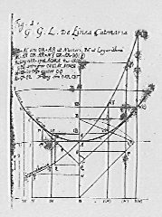

Das Problem
Illustration von Leibniz
Eine Kette, die an jedem Ende an einem Punkt befestigt wird und dazwischen herunterhängt, nimmt eine ganz bestimmte Form an, die man Kettenlinie nennt. Diese Form hängt von der Lage der Aufhängepunkte und der Länge der Kette ab, nicht jedoch von ihrem Gewicht pro Längeneinheit.
Das Problem der Kettenlinie wurde von Leibniz, Huygens und Johann Bernoulli im Jahr 1690 gelöst. Diese Lösung enthielt allerdings keine Herleitung. Johann Bernoulli wird erst in seinen Lektionen für de l'Hospital expliziter. Das Problem an sich findet sich in einem Artikel von Jacob Bernoulli aus dem Jahr 1690 zusammen mit dem berühmten Problem der Brachystochrone.
Natürlich war die Lösung dieses Problems und der verwandten Probleme der Traktrix und der Brachystochrone für Leibniz eine triumphale Anwendung seiner neuen Differentialrechung aus dem Jahr 1675.
Offenbar taucht das Problem auch bei Galileo Galiei auf. Die Resultate waren allerdings nicht genau. Er glaubte, dass die Kettenlinie eine Parabel sei. Huygens wies 1664 (im Alter von 17 Jahren) den Fehler von Galiei bei der Lösung nach, indem er zeigte, daß die Kettenlinie keine Parabel sein könne. Und dies, wo doch selbst die päpstlichen Inquisition keinen Fehler im Werk Galileis gefunden hatte!
zum Inhaltsverzeichnis: Kettenlinie
Literatur
G.Leibniz, De linea in quam flexile se pondere
proproi curvat, ejusque usu insigni adinveniendas quotcunque medias
proportionales & logarithmos, Acta Eruditorum (1691) S.467.
Johann Bernoulli, Solutio problematis funicularii, exhibita a Joh. Bernoulli, Basil. Med. Cand., Acta Eruditorum (1696), S. 274.
Johann Bernoulli, Lectiones Mathematicae de Methodo integralium, allisque, conscriptae in usum Ill. Marchionis Hospitalii, Cum Auctor Parisiis ageres Annis 1691 & 1692, Opera Omnia, Tomus III, S. 384.
Jacob Bernoulli, Analysis problematis ante hac porpositi, de inventione linea descensus a corpore gravi percurrendae uniformiter, sic ut temporibus aequales altitudines emetiatur: & alterius cujusdam Problematis Propositio. Acta Eruditorum (1690), S. 217-219.
Galieo Galiei Linceo, Discorsi e demonstrazioni matematiche, intorno a due nuove scienze Attenenti alla mecanica & i movimenti locali (1638).